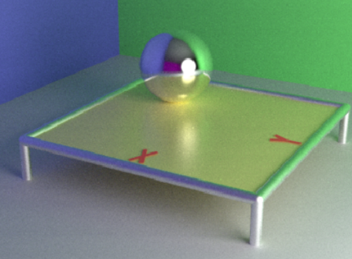

Ray Tracing
- 프로젝트 설명: 레이트레이싱 기술을 활용한 3D 그래픽 프로그램 / 솔로 프로젝트
- 기술 스택: C++, OpenGL
- Github URL: Project
Link
광선 추적 기술을 사용하여 사실적인 조명, 반사 및 그림자를 구현한 최첨단 그래픽 데모를 개발했습니다.
2D 텍스처에 광선 투영(raycasting) 기법을 적용하여 모션 블러 효과를 구현했습니다.
명시적, 암시적, 절차적, 프랙탈 등 다양한 유형의 표면에 대한 광선-표면 교차를 계산했습니다.
마이크로-패싯 BRDF를 사용하여 조명, 반사, 굴절 및 그림자를 계산했습니다.
성능 문제를 해결하기 위해 광선 추적 코드를 최적화하여 효율적으로 실행되도록 했습니다.
